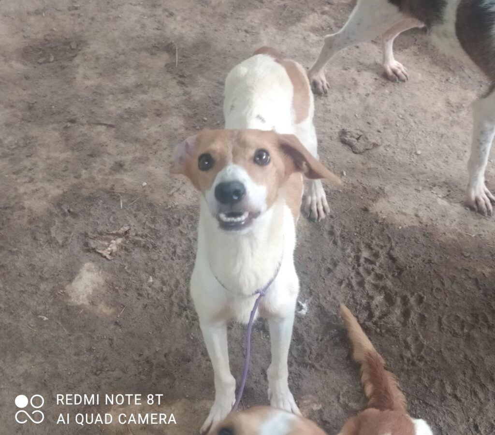

REFUGI ANIMAL


Barcelona
Raça: Mestís
Sexe: Femella
F.Naixement: 11.07.2022
Tamany: Petit
Bon dia amics, Us presento a Dana, aquesta preciositat és una joveneta cruïlla de poteta i Ratonera d'uns 2 anyets, que va tocar amb els seus ossos a la gossera a mitjans del mes de juliol passat Si us plau ajudar-me; a veure si entre tots aconseguim que canviï la seva sort i trobem una llar per a la peluda. Dana es lliura degudament vacunada, esterilitzada i desparasitada. Actualment és a la gossera de Barcelona, però pot viatjar a qualsevol punt d'Espanya. Podeu contactar amb mi aquí per a qualsevol dubte: Juan Carlos Castaño 646 958 099 juancarcasta@gmail.com